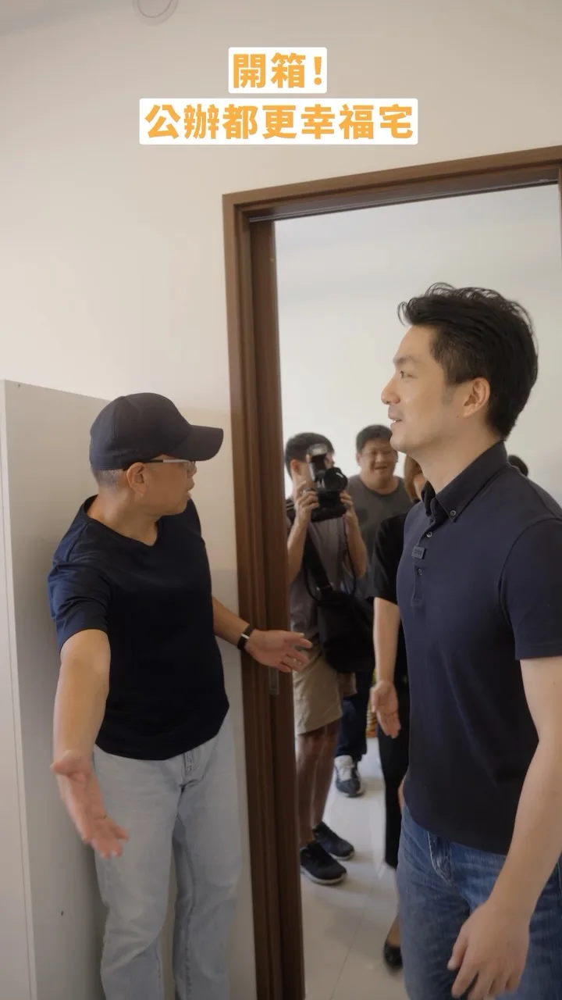
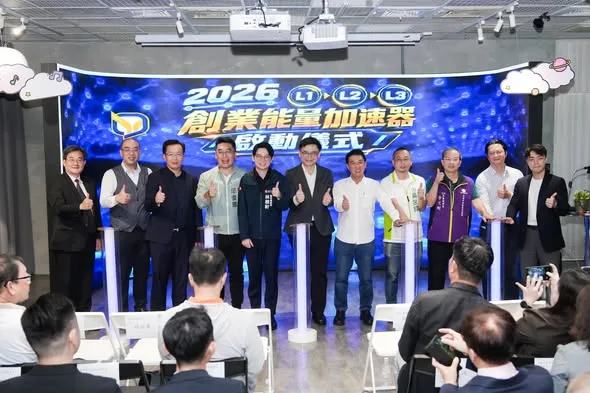

何欣純94achun
台中要改變，就交給何欣純！ 謝謝鄭麗君副院長的推薦，我會信守政見承諾，照顧每位市民，大力推動無人機產業，讓台中再次起飛💪 #心存大台中 #市長換欣_台中創新
Posts
台中要改變，就交給何欣純！ 謝謝鄭麗君副院長的推薦，我會信守政見承諾，照顧每位市民，大力推動無人機產業，讓台中再次起飛💪 #心存大台中 #市長換欣_台中創新

@schuanglawyer:你有沒有認識一些長輩，明明身體不舒服，卻因為醫院太遠、交通不方便，選擇「忍一忍、再等等」，沒有去看醫生。 對長者、行動不便，或是需要家人陪同就醫的市民來說，光是出門看病，就是一大障礙。 桃園人口急遽成長，醫療資源分布卻嚴重不均。我們不能再用過去的思維，來面對此刻桃園需要的量能，更不能坐著等待中央、等待醫院，當然也不是靠集氣。 醫療建設需要專業、協調與執行力！ 世杰來自鄉下漁村，我要縮短城鄉的醫療資源落差，要用實際支持，留住優秀的醫護人才，打造更完整、更均衡的桃園醫療體系，同時積極為桃園第二座醫學中心布局！讓我們一起努力，打造健康幸福心桃園💖

霧峰的大日子，鄉親的好日子！👏 #便民服務再升級 #育兒多一份安心 今天啟臣代表立法院和韓國瑜院長，與盧秀燕市長、顏寬恒委員、地方民代及鄉親，一起見證「霧峰區聯合行政中心暨本堂托嬰中心」正式啟用！ 從過去的省議會，到今天的立法院中南部服務中心，霧峰承載臺灣民主發展的歷史，也與立法院有著深厚連結。對啟臣而言，這份情感，更是持續為地方努力的責任。 新大樓以純白流線呼應「霧」的意象，整合公所、戶政與托嬰服務，讓鄉親洽公更方便，也讓年輕爸媽多一份育兒支持。建設的價值，就在於讓大家的生活一天比一天更好！ 感謝市府團隊與地方各界的努力。中央地方一條心，啟臣會持續爭取建設與資源，延續霧峰的文化風華，讓便民服務、育兒照顧跟上鄉親的需求，一起為霧峰寫下新的光榮！ #霧峰區聯合行政中心 #臺中升級 #幸福加給


＃十大新政全面升級 ＃備孕三箭生育自主 🏹女性補助凍卵： 全面補助台南25至40歲女性凍卵，終身一次，最高補助3萬元。現在很多女性不是不想生，而是求學、工作、成家有不同人生安排，往往一轉眼，就錯過適合生育的年齡。政府要做的，不是催著大家趕快生，而是提供更多時間與選擇。 龍介將凍卵補助提高到3萬元，就是要實實在在減輕負擔，把生育選擇權交還給女性，讓想生、想成家的女性，可以照自己的步調規劃人生，把未來選擇留下來。 🏹男性凍精補助： 孕育下一代，不只是女性的事，男性的生育力同樣需要被重視。針對因疾病、治療等醫療需求，必須提前保存生育力的男性，台南市政府提供醫療性凍精補助，終身一次，每人最高補助3000元。 生孩子是兩個人的事，備孕當然不能只照顧女性，男性有醫療需求，市府一樣要幫忙，讓生育保障做到男女都顧得到。 🏹抽血檢驗補助： 龍介上任後，將補助女性AMH（抗穆勒氏管荷爾蒙）抽血檢驗，每人上限1000元。透過AMH檢驗，協助女性了解卵巢功能與卵子庫存量，提早掌握自身狀況，做好生育規劃。 很多事情可以等，但生育規劃不能只靠感覺。愈早了解自己的生育力，就能多一點時間準備、多一點選擇，能更從容地規劃自己未來。 龍介這次「十大新政」加強版，特別把生子、育兒、備孕列為三大政策，就是因為少子化不能只靠一筆補助解決，而要從想生、能不能生，一路照顧到孩子出生、長大。 現今社會、職場環境改變，晚婚、晚生愈來愈普遍，男女生育問題也跟著增加。政府不能只是催大家趕快生，更要幫市民把未來的選擇留下來。 提出「備孕三箭」，把過去偏重醫療、不孕治療的觀念再往前推一步，讓生育支持不只是在需要治療時才介入，成為協助市民規劃人生與職涯的一項福利。 只要符合條件，女性凍卵、男性醫療性凍精、AMH檢驗，台南市政府都來幫忙。 從備孕、生子到育兒，龍介要做的，就是把路一段一段鋪好，讓想生的人敢生，想晚一點生的人，也能有選擇。


一座城市，如何讓海外人才願意回來？ ⠀ 與在日青年、留學生交流後，我更確定答案除了薪水，還有一座城市能不能讓人住得起、養得起孩子，也看得見未來。 ⠀ 這趟參訪，我觀察東京的運動驛站、吸菸區與徒步空間。每座城市都有值得學習的地方，台北應該吸收各國經驗，走出自己的道路，成為「世界的台北」。 ⠀ 我要讓台北同時擁有好的生活與更多機會。 ⠀ 從婚育宅、青年宅、家長喘息服務，到運動驛站、河岸與山徑；讓想回台北成家的人住得下來，也讓每個人每天省下三十分鐘，把時間留給自己與家人。 ⠀ 面對未來的北士科，市府更要提前整合用電、交通、住宅、托育、教育與公共服務。我提出「雙站合一」，把變電所與電動公車調度站整合規劃，也要讓北士科未來六萬名就業人口，不只工作在台北市，更願意把生活、消費都留在台北市。 ⠀ 我也將推動青年 AI 使用支持方案，透過 AI 教育錢包，依學習、專業及創業需求分級支持；並以青年圓夢計畫，幫助青年走向海外，再把經驗、人脈與新的可能帶回台北。 ⠀ 市府要成為新創的第一個客戶，也要成為青年勇敢追夢時，背後最可靠的夥伴。 ⠀ 讓台北人才回得來、企業進得來、青年看得見未來。 ⠀ #台北順起來 #你的市長沈伯洋


和新北隊的夥伴們一起，為大家帶來更多元、漂亮的新北！ 這兩天我接連到中和、土城參與了 吳昇翰、 張嘉玲舉辦的親子活動，不但感受大小朋友的活力，也再一次和每一位家長報告，未來我一定會從孩子的高度出發，重新檢視新北的公共設施是否真正符合孩子的需求，讓家庭出門更加安心和便利！ 我會建置 #臨時托育查詢平台，同時增加夜間托育場所與服務量能，為不同工作型態家庭提供實際的照顧，做每一位家長的神隊友。 下個禮拜，我還會和 #數感實驗室 合作，在 #新店耕莘專校 舉辦「#水獺媽媽數感樂園」活動，讓數學融入生活，歡迎大家一起來哦！ 我也參與了 張志豪 的後援會成立茶會，志豪過去擔任議員就一直推動「興南夜市活化再復興運動」，希望為地方商圈帶動觀光人潮，這跟我所提出的「地方商圈」政見一致，未來我會提高新北商圈補助，幫助商圈改善硬體設施、優化週邊的交通規劃，讓民眾可以更輕鬆、舒適的到新北各商圈觀光旅遊，吸引更多人來新北觀光。 接下來又是新的一週，我會繼續為大家衝！


榮耀商圈、擁抱山海 站在海邊路的會場，看著高雄港旅運中心、高雄展覽館就在眼前，這幾年高雄的轉變，大家都看得見。前新苓鼓鹽後援總會正式成立，現場超過三千位好朋友到場支持，一起成為高雄隊。感謝許文欽總會長一路支持，也感謝各地地方團隊站出來，一起為高雄打拚。 中央有 黃捷 委員，為青年居住、商圈發展努力；地方有 簡煥宗 高雄市議員 、 姐姐的行動力 李喬如 、 高雄市議員郭建盟、 湯詠瑜 詠瑜新選擇 、 黃文益 高雄市議員 ，持續關心地方建設。有中央、地方一起合作，市政才能一項一項往前走。 未來的市中心，要更適合居住，也要讓商圈重新熱起來。 前金、新興、苓雅將加速推動公辦都更、老宅延壽，搭配青創補助，讓新堀江、玉竹、三多等商圈重新聚人氣。同時持續增加敬老卡、長照與托育服務，讓老城區住得更安心、生活更方便。 鼓山、鹽埕則會持續把山海優勢轉化成生活魅力。從輕軌串聯港灣、內惟藝術中心，到鹽一市場活化，這些改變已經逐漸走進大家的日常。下一步，將加速推動中鼓山宜居特區、提升壽山動物園服務，也結合大港閱冰、旗津風箏節等活動，讓山海資源與城市生活更緊密。 高雄的建設還要繼續往前。大選倒數76天，請大家繼續作夥，拚市長接棒、議會過半，讓高雄一步一步變得更好。 我們一起拚，高雄繼續向前！ 趙天麟 李昆澤 李柏毅 拚搏未來 鍾年晃談天說地 邱俊憲 高雄市議員 何權峰 高雄市議員 黃文志 高雄市議員 林智鴻 高雄市議員 張博洋 鳳山絕配 鄧巧佩 蔡秉璁 高雄向前衝 黃敬雅 Huang Ching-Ya 吳昱鋒-鎮港小前鋒


拚全民福利！0-18歲月領5千、AI紅利1萬元 陳亭妃喊話藍白：別擋明年預算！ #shorts

霧峰的熱情，啟臣收到了！🙌 #進步不能停 #繁榮不能停 謝謝南天宮鄉親相挺，與顏寬恒委員、蘇柏興 興台中、林碧秀議員及魏敏昭理事長，一起為霧峰的未來打拚！ 霧峰有歷史、有文化，更有好農產。我要結合會展經濟與深度旅遊，讓世界看見霧峰，讓人潮帶來地方商機；推動捷運橘線、打造 #20分鐘生活圈，讓就醫、就學與日常生活更便利。 盧秀燕市長打下的幸福基礎，啟臣要繼續升級！老人健保補助不中斷、敬老愛心卡更好用，推動65歲以上帶狀疱疹疫苗補助，也讓孩子午餐吃得更好、校園更加安全。 照顧長輩、守護孩子、做實建設，我們一起打造更好的臺中！💪 #臺中升級 #幸福加給 #霧峰 #南天宮 #國際旗艦城 #文化觀光 #會展經濟 #敬老愛心卡升級

Nga’ay ho！Ci Nikar kako！ 很高興今天再次參加原住民族聯合文化活動，每年我都會來到市府廣場和大家相聚，尤其是看到一張張熟悉的面孔，真的就像回到部落和家人團聚一樣，特別親切又溫暖！ 也感謝現場的族人朋友知道我是阿美族的媳婦，都很熱情的為我加油打氣，大家的鼓勵和支持，我都深深放在心裡，也會帶著這份力量繼續前行。 未來我會持續推動更多原住民族政策，全方位支持、照顧新北市的族人朋友們，我會和大家一起努力，讓族人在新北安心生活，也讓珍貴的原住民族文化持續扎根、世代傳承！


依法代拆、突破僵局，文山木柵公辦都更完工！ 今天早上，我回到熟悉的文山區，視察「文山木柵段公辦都更案」完工情形。看著眼前嶄新的建築，我想起2023年，上任不到三個月時，市府面對的那個艱難決定。 都更最困難的，往往是漫長的溝通與整合。 只要還有一、兩間不同意戶，不願意搬遷，整個案件就可能無限期延宕，多數住戶也只能繼續等待。依法代拆，從來不是一個容易的決定；但政府不能因為困難就停在原地，更不能讓願意配合、等待多年的住戶，遲遲看不到家園重建的那一天。 這是2019年《都市更新條例》修法後，臺北市首例執行代拆的案件，也是目前規模最大的公辦都更案。 當時，臺北隊在不到三個月內整合跨局處資源，反覆模擬各種突發狀況及應變措施，在保障住戶權益、恪守法定程序的前提下，依法完成代拆，突破都更最艱難的一關，也讓停滯多年的案件重新向前。 如今，這項公辦都更案順利完工，市府分回的282戶將全數作為 #幸福住宅，照顧育兒家庭與新婚夫妻，幫助更多年輕人減輕居住負擔，在臺北安心成家、安心育兒。 臺北已經邁入大都更時代。 過去3年的都更報核案件數，已達前8年的2.4倍，而臺北隊推動都更的腳步不會停止。 未來，我們會繼續突破難關，讓更多老舊社區迎來新生，讓市民住得更安全、更安心。 該做的事，勇敢去做； 對的事情，堅持到底。

你有沒有認識一些長輩，明明身體不舒服，卻因為醫院太遠、交通不方便，選擇「忍一忍、再等等」，沒有去看醫生。 對長者、行動不便，或是需要家人陪同就醫的市民來說，光是出門看病，就是一大障礙。 桃園人口急遽成長，醫療資源分布卻嚴重不均。我們不能再用過去的思維，來面對此刻桃園需要的量能，更不能坐著等待中央、等待醫院，當然也不是靠集氣。 醫療建設需要專業、協調與執行力！ 我是黃世杰，我主張： 🔈打造桃園特色醫療中心網絡 ✅精準分工：成立癌症、兒童、高齡等特色醫療院所 ✅資源挹注：市府補助專業設備與人才，強化醫療量能 ✅跨院合作：結合醫學中心輔導，快速到位 🔈建立全齡身心照護支持網 ✅設置兒童早療快速通道 ✅將心理健康服務帶進社區 ✅推動醫養合一，家庭照顧有喘息 🔈推動醫護安居專案 ✅住得安心：社宅專案保留額、提供租屋加碼補貼 ✅行得順暢：推動大眾運輸通勤補助 ✅育得無憂：醫護子女享有幼兒園優先序位 世杰來自鄉下漁村，我要縮短城鄉的醫療資源落差，要用實際支持，留住優秀的醫護人才，打造更完整、更均衡的桃園醫療體系，同時積極為桃園第二座醫學中心布局！讓我們一起努力，打造健康幸福心桃園💖

@hsiehlungchieh:＃十大新政全面升級 ＃備孕三箭生育自主 🏹女性補助凍卵： 全面補助台南25至40歲女性凍卵，終身一次，最高補助3萬元。現在很多女性不是不想生，而是求學、工作、成家有不同人生安排，往往一轉眼，就錯過適合生育的年齡。政府要做的，不是催著大家趕快生，而是提供更多時間與選擇。 龍介將凍卵補助提高到3萬元，就是要實實在在減輕負擔，把生育選擇權交還給女性，讓想生、想成家的女性，可以照自己的步調規劃人生，把未來選擇留下來。 🏹男性凍精補助： 孕育下一代，不只是女性的事，男性的生育力同樣需要被重視。針對因疾病、治療等醫療需求，必須提前保存生育力的男性，台南市政府提供醫療性凍精補助，終身一次，每人最高補助3000元。 生孩子是兩個人的事，備孕當然不能只照顧女性，男性有醫療需求，市府一樣要幫忙，讓生育保障做到男女都顧得到。 🏹抽血檢驗補助： 龍介上任後，將補助女性AMH（抗穆勒氏管荷爾蒙）抽血檢驗，每人上限1000元。透過AMH檢驗，協助女性了解卵巢功能與卵子庫存量，提早掌握自身狀況，做好生育規劃。 很多事情可以等，但生育規劃不能只靠感覺。
新住民挺巧慧！一起生活一起拚，打造多元族群共榮的城市！ 謝謝來自各國的好朋友，穿著隆重的傳統服飾來幫我加油，為我成立「新住民後援會」，還有越南的姊妹送上春捲、西藏的朋友為我掛上哈達，給我滿滿的祝福，真的非常感動！ 大家離開熟悉的家鄉，在不同的語言和文化中生活、奮鬥，真的需要很大的勇氣。所以我一直希望，未來的市政府能更貼近所有新住民朋友的心情，理解大家在生活、工作上的需要，也期望用更進步的政策，陪伴大家在新北市落地生根、發揮所長。 未來，我要增設「新住民社區諮詢站」，讓政府的資訊和服務走進大家熟悉的社交場域；成立「新住民創業輔導團」，以「陪伴型」的服務，由專業導師帶大家從學習、就業一路走到創業；也要支持多元文化創作，讓不同語言與文化，有更大的舞台可以發揮。 我會繼續努力，把新北市打造成最了解新住民的城市！

@su.chiaohui:和新北隊的夥伴們一起，為大家帶來更多元、漂亮的新北！ 這兩天我接連到中和、土城參與了吳昇翰、張嘉玲舉辦的親子活動，不但感受大小朋友的活力，也再一次和每一位家長報告，未來我一定會從孩子的高度出發，重新檢視新北的公共設施是否真正符合孩子的需求，讓家庭出門更加安心和便利！ 我會建置臨時托育查詢平台，同時增加夜間托育場所與服務量能，為不同工作型態家庭提供實際的照顧，做每一位家長的神隊友。 我也參與了張志豪的後援會成立茶會，志豪過去擔任議員就一直推動「興南夜市活化再復興運動」，這跟我所提出的「地方商圈」政見一致，未來我會提高新北商圈補助，幫助商圈改善硬體設施、優化週邊的交通規劃，讓民眾可以更輕鬆、舒適的到新北各商圈觀光旅遊，吸引更多人來新北觀光。 接下來又是新的一週，我會繼續為大家衝！

選舉有選區，市政不能有界線！ 今天下午，我連跑太平、大里三場，從 #江啟臣之友會太平分會 成立，到北太平、北大里問政說明會，謝謝鄉親一路熱情相挺！💪 太平人口已突破20萬，建設一定要 #加碼加速加強！我要打造「#20分鐘生活圈」，讓上班、上學、就醫、採買更省時，把時間還給市民與家人。 交通要推動藍線延伸太平、屯區捷運環狀線，先優化公車再推動免費；敬老愛心卡改採一年結算、計程車單趟折抵200元，並補助65歲以上市民施打帶狀疱疹疫苗。太平、大里的產業也要結合實體AI、機器人與無人載具，讓產業升級、勞工加薪。 感謝 好立委 楊瓊瓔 委員、江連福前委員、余文欽總幹事，以及 蘇柏興 興台中、接勵向前 我是佳恬 、 #賴義鍠 、林碧秀 議員，還有李麗華前議員、李煥湘理事長、 紀進豐里長及所有地方夥伴並肩相挺。 太平6成，一起拚！讓屯區升級、臺中升級！ #敬老卡升級 #交通升級 #產業升級 #太平 #大里 #臺中啟程 #打造旗艦城
臺北市 #育兒減少工時 計畫上路半年，很高興看到中央宣布跟進，讓這項政策從臺北出發、擴及全國，幫助更多家長兼顧工作與家庭。 上週五，我親自拜訪臺北市進出口商業同業公會（IEAT）及世雅育樂股份有限公司（SEGA），和企業及員工面對面交流，了解政策上路後的實際情形，也傾聽第一線的建議，作為未來持續優化的方向。 一項政策有沒有幫助，最真實的答案，就在每個市民的日常裡。 在IEAT，一位爸爸和我分享，他平時負責準備家中晚餐。現在提早一小時下班，不必再擔心尖峰時段交通，可以從容地到黃昏市場買菜、回家煮晚餐，陪家人一起吃飯。多出來的一小時，讓他有更充裕的時間兼顧工作與家庭。 在SEGA，一位媽媽告訴我，家裡是雙薪家庭，也沒有阿公阿嬤幫忙。現在她能提早接孩子放學，也有時間處理家中大小事，不再一路趕、一直催。自己的心情放鬆了，陪伴孩子的時間，也更有品質。 這些日常的生活改變，正是我們推動「育兒減少工時」最重要的意義。 截至今年6月，已有480家企業響應、近900名員工受惠，也獲得許多正面回饋。明年度，我們將持續擴大辦理，讓好的政策擴及更多育兒家庭。 從我上任以來，臺北市陸續推動多項全國首創的育兒友善政策。我們會持續努力，從家庭真正需要的地方出發，全方位支持婚育家庭，成為家長最堅實的後盾。


大岡山之友會，正式成立！ 今天來到大岡山，看見許多在地鄉親站出來支持，心裡真的非常感動。大岡山後援會位處重要交通要道，大家願意在這裡為高雄、為這場選戰站在一起，就是一股讓全高雄都看得見的力量。 四年前來到高雄，從競選到現在，一步一腳印走遍高雄。四年來，沒有離開高雄，買在高雄、住在高雄，也把高雄當成真正的家。這一路走來，更深深感受到，鄉親要的從來不是漂亮口號，而是一個願意留下來、願意傾聽，也願意真正解決問題的人。 接下來，還要走更多地方、見更多鄉親。也希望大家一起成為柯志恩的分身，把這份正向、陽光的力量帶到高雄每一個角落，幫忙拉票、幫忙拜託鄉親，把更多認同這座城市未來、渴望城市繼續改變與突破的人團結起來。 高雄的傳統產業，需要政府真正關心，也需要一雙看得見產業困境的眼睛；長輩需要更好的照顧，年輕人要有買得起、養得起的未來，孩子也要有更好的教育與國際競爭力。這些事情，都不能只是選舉時說說而已，而是未來四年真正要努力做到的事。 這一場選戰，資源或許不對等，排山倒海的抹黑、造謠也隨之而起，但我們的士氣絕對不低落。我要懇請所有鄉親一起守護國民黨在大岡山所提名的四位議員候選人 黃韻涵、方信淵-高雄市議員、宋立彬 高雄市議員、李亞築 高雄市議員 服務處 與里長，也要一起拚、一起過關！ 謝謝大岡山的鄉親站出來，從今天開始，一起把支持化成行動，把點滴的熱情都拚出來。 大岡山一起拚，高雄一起贏！ #大岡山 #高雄 #一起贏

霧峰的熱情，啟臣收到了！🙌 #進步不能停 #繁榮不能停 謝謝南天宮鄉親相挺，與顏寬恒委員、蘇柏興 興台中、林碧秀議員及魏敏昭理事長，一起為霧峰的未來打拚！ 霧峰有歷史、有文化，更有好農產。我要結合會展經濟與深度旅遊，讓世界看見霧峰，讓人潮帶來地方商機；推動捷運橘線、打造 #20分鐘生活圈，讓就醫、就學與日常生活更便利。 盧秀燕市長打下的幸福基礎，啟臣要繼續升級！老人健保補助不中斷、敬老愛心卡更好用，推動65歲以上帶狀疱疹疫苗補助，也讓孩子午餐吃得更好、校園更加安全。 照顧長輩、守護孩子、做實建設，我們一起打造更好的臺中！💪 #臺中升級 #幸福加給 #霧峰 #南天宮 #國際旗艦城 #文化觀光 #會展經濟 #敬老愛心卡升級

輸過，沒怕過！四年來我們一直都在，今年我們一起把選戰贏回來 今天來到前鎮，參加我們小湯 鎮港小湯 湯茹婷 競選總部成立大會。看見現場湧入上千位熱情的鄉親、工會代表與地方好朋友，場面比四年前整整大了十倍！這份熱氣騰騰的支持，正是小湯這四年來一步一腳印、深耕基層最扎實的成果。 #前鎮 #小港 是高雄產業與生活的重鎮，無論是勞工權益、交通建設還是長照環境，都需要真正願意傾聽、長久陪伴的人。 四年前，我和小湯一樣，在選舉中都沒有當選。但我們「輸過，從來沒怕過！」我們沒有因為一時的挫折而離開，更沒有輸掉對這片土地與鄉親的熱情。小湯即使沒有資源，這四年來依然奔波於大街小巷、深入數十個關懷據點服務鄉親長輩，用行動證明她一直都在。 小湯的努力與真誠，大家看得見，最照顧地方的 高雄市議員 曾麗燕 前議長更是看在眼裡。在曾議長決定將服務精神傳承交棒的這一刻，她親自站出來力挺小湯。今天在台上，曾議長為小湯披上競選彩帶，而小湯也單膝跪地接下這份重擔與祝福——那份對前輩的深深尊敬，以及接下地方服務責任的堅定決心，讓在場的所有人都無比動容。 今天看到上次選舉時，便率領大批工會代表力挺湯茹婷的 #新高市產業總工會 何政家理事長，再次公開表態支持小湯，還有這麼多工會兄弟姊妹與基層鄉親站在我們身邊，這就是最真實的「 #庶民力量 」。政治不該是選舉到了才出現，而是要長時間的陪伴與奉獻。 對於我們的勞工與產業，我提出了相當完整的政見願景藍圖，我相信我能接棒陳其邁市長，並做得更好；我也相信，未來若我有機會帶領高雄，小湯一定也是能夠與我並肩，為高雄市民爭取更多權益與最好福利的議員夥伴。 再次懇請前鎮、小港的鄉親，給沒有背景、卻最肯打拚的年輕人湯茹婷一個機會。讓她進入市議會，成為勞工與鄉親最堅強的代言人！ 讓我們一起為前鎮、小港努力，也一起為高雄拼出更好的未來！

支持青年創業 讓好點子在高雄實現！ 今天很高興出席「創業能量加速器」啟動儀式，和青年朋友、導師顧問交流。從一個點子到開始經營，資金來源、品牌走向、目標客群，都是創業者必須面對的各種關卡。 謝謝青年局整合專業顧問、育成與創投資源，依照不同創業階段提供課程與諮詢，協助青年處理行銷、財務及法律問題，把夢想做成事業，逐步站穩腳步。 未來，我會推動「雄青五力」，從實習就業、國際交流到創業輔導，並兼顧居住與心理健康，讓青年朋友拼事業時，生活有支持、遇到困難有人幫忙。 創業需要實際、專業的協助。我會持續串聯資源，陪伴青年在高雄開創事業，安心留下來打拚！ 高雄小金剛許智傑 邱俊憲 高雄市議員 吳昱鋒-鎮港小前鋒 黃捷 服務團隊 陳慧文 高雄市議員 服務團隊 黃飛鳳 高雄市議員 服務團隊

你有沒有認識一些長輩，明明身體不舒服，卻因為醫院太遠、交通不方便，選擇「忍一忍、再等等」，沒有去看醫生。 對長者、行動不便，或是需要家人陪同就醫的市民來說，光是出門看病，就是一大障礙。 桃園人口急遽成長，醫療資源分布卻嚴重不均。我們不能再用過去的思維，來面對此刻桃園需要的量能，更不能坐著等待中央、等待醫院，當然也不是靠集氣。 醫療建設需要專業、協調與執行力！ 我是黃世杰，我主張： 🔈打造桃園特色醫療中心網絡 ✅精準分工：成立癌症、兒童、高齡等特色醫療院所 ✅資源挹注：市府補助專業設備與人才，強化醫療量能 ✅跨院合作：結合醫學中心輔導，快速到位 🔈建立全齡身心照護支持網 ✅設置兒童早療快速通道 ✅將心理健康服務帶進社區 ✅推動醫養合一，家庭照顧有喘息 🔈推動醫護安居專案 ✅住得安心：社宅專案保留額、提供租屋加碼補貼 ✅行得順暢：推動大眾運輸通勤補助 ✅育得無憂：醫護子女享有幼兒園優先序位 世杰來自鄉下漁村，我要縮短城鄉的醫療資源落差，要用實際支持，留住優秀的醫護人才，打造更完整、更均衡的桃園醫療體系，同時積極為桃園第二座醫學中心布局！讓我們一起努力，打造健康幸福心桃園💖

＃十大新政全面升級 ＃備孕三箭生育自主 🏹女性補助凍卵： 全面補助台南25至40歲女性凍卵，終身一次，最高補助3萬元。現在很多女性不是不想生，而是求學、工作、成家有不同人生安排，往往一轉眼，就錯過適合生育的年齡。政府要做的，不是催著大家趕快生，而是提供更多時間與選擇。 龍介將凍卵補助提高到3萬元，就是要實實在在減輕負擔，把生育選擇權交還給女性，讓想生、想成家的女性，可以照自己的步調規劃人生，把未來選擇留下來。 🏹男性凍精補助： 孕育下一代，不只是女性的事，男性的生育力同樣需要被重視。針對因疾病、治療等醫療需求，必須提前保存生育力的男性，台南市政府提供醫療性凍精補助，終身一次，每人最高補助3000元。 生孩子是兩個人的事，備孕當然不能只照顧女性，男性有醫療需求，市府一樣要幫忙，讓生育保障做到男女都顧得到。 🏹抽血檢驗補助： 龍介上任後，將補助女性AMH（抗穆勒氏管荷爾蒙）抽血檢驗，每人上限1000元。透過AMH檢驗，協助女性了解卵巢功能與卵子庫存量，提早掌握自身狀況，做好生育規劃。 很多事情可以等，但生育規劃不能只靠感覺。愈早了解自己的生育力，就能多一點時間準備、多一點選擇，能更從容地規劃自己未來。 龍介這次「十大新政」加強版，特別把生子、育兒、備孕列為三大政策，就是因為少子化不能只靠一筆補助解決，而要從想生、能不能生，一路照顧到孩子出生、長大。 現今社會、職場環境改變，晚婚、晚生愈來愈普遍，男女生育問題也跟著增加。政府不能只是催大家趕快生，更要幫市民把未來的選擇留下來。 提出「備孕三箭」，把過去偏重醫療、不孕治療的觀念再往前推一步，讓生育支持不只是在需要治療時才介入，成為協助市民規劃人生與職涯的一項福利。 只要符合條件，女性凍卵、男性醫療性凍精、AMH檢驗，台南市政府都來幫忙。 從備孕、生子到育兒，龍介要做的，就是把路一段一段鋪好，讓想生的人敢生，想晚一點生的人，也能有選擇。
新住民挺巧慧！一起生活一起拚，打造多元族群共榮的城市！ 謝謝來自各國的好朋友，穿著隆重的傳統服飾來幫我加油，為我成立「新住民後援會」，還有越南的姊妹送上春捲、西藏的朋友為我掛上哈達，給我滿滿的祝福，真的非常感動！ 大家離開熟悉的家鄉，在不同的語言和文化中生活、奮鬥，真的需要很大的勇氣。所以我一直希望，未來的市政府能更貼近所有新住民朋友的心情，理解大家在生活、工作上的需要，也期望用更進步的政策，陪伴大家在新北市落地生根、發揮所長。 未來，我要增設「新住民社區諮詢站」，讓政府的資訊和服務走進大家熟悉的社交場域；成立「新住民創業輔導團」，以「陪伴型」的服務，由專業導師帶大家從學習、就業一路走到創業；也要支持多元文化創作，讓不同語言與文化，有更大的舞台可以發揮。 我會繼續努力，把新北市打造成最了解新住民的城市！

和新北隊的夥伴們一起，為大家帶來更多元、漂亮的新北！ 這兩天我接連到中和、土城參與了吳昇翰、張嘉玲舉辦的親子活動，不但感受大小朋友的活力，也再一次和每一位家長報告，未來我一定會從孩子的高度出發，重新檢視新北的公共設施是否真正符合孩子的需求，讓家庭出門更加安心和便利！ 我會建置 #臨時托育查詢平台，同時增加夜間托育場所與服務量能，為不同工作型態家庭提供實際的照顧，做每一位家長的神隊友。 下個禮拜，我還會和 #數感實驗室 合作，在 #新店耕莘專校 舉辦「#水獺媽媽數感樂園」活動，讓數學融入生活，歡迎大家一起來哦！ 我也參與了張志豪的後援會成立茶會，志豪過去擔任議員就一直推動「興南夜市活化再復興運動」，希望為地方商圈帶動觀光人潮，這跟我所提出的「地方商圈」政見一致，未來我會提高新北商圈補助，幫助商圈改善硬體設施、優化週邊的交通規劃，讓民眾可以更輕鬆、舒適的到新北各商圈觀光旅遊，吸引更多人來新北觀光。 接下來又是新的一週，我會繼續為大家衝！

選舉有選區，市政不能有界線！ 今天下午，我連跑太平、大里三場，從 #江啟臣之友會太平分會 成立，到北太平、北大里問政說明會，謝謝鄉親一路熱情相挺！💪 太平人口已突破20萬，建設一定要 #加碼加速加強！我要打造「#20分鐘生活圈」，讓上班、上學、就醫、採買更省時，把時間還給市民與家人。 交通要推動藍線延伸太平、屯區捷運環狀線，先優化公車再推動免費；敬老愛心卡改採一年結算、計程車單趟折抵200元，並補助65歲以上市民施打帶狀疱疹疫苗。太平、大里的產業也要結合實體AI、機器人與無人載具，讓產業升級、勞工加薪。 感謝 好立委 楊瓊瓔 委員、江連福前委員、余文欽總幹事，以及 蘇柏興 興台中、接勵向前 我是佳恬 、 #賴義鍠 、林碧秀 議員，還有李麗華前議員、李煥湘理事長、 紀進豐里長及所有地方夥伴並肩相挺。 太平6成，一起拚！讓屯區升級、臺中升級！ #敬老卡升級 #交通升級 #產業升級 #太平 #大里 #臺中啟程 #打造旗艦城
臺北市「育兒減少工時」計畫上路半年，很高興看到中央宣布跟進，讓這項政策從臺北出發、擴及全國，幫助更多家長兼顧工作與家庭。 上週五，我親自拜訪臺北市進出口商業同業公會（IEAT）及世雅育樂股份有限公司（SEGA），和企業及員工面對面交流，了解政策上路後的實際情形，也傾聽第一線的建議，作為未來持續優化的方向。 一項政策有沒有幫助，最真實的答案，就在每個市民的日常裡。 在IEAT，一位爸爸和我分享，他平時負責準備家中晚餐。現在提早一小時下班，不必再擔心尖峰時段交通，可以從容地到黃昏市場買菜、回家煮晚餐，陪家人一起吃飯。多出來的一小時，讓他有更充裕的時間兼顧工作與家庭。 在SEGA，一位媽媽告訴我，家裡是雙薪家庭，也沒有阿公阿嬤幫忙。現在她能提早接孩子放學，也有時間處理家中大小事，不再一路趕、一直催。自己的心情放鬆了，陪伴孩子的時間，也更有品質。 這些日常的生活改變，正是我們推動「育兒減少工時」最重要的意義。 截至今年6月，已有480家企業響應、近900名員工受惠，也獲得許多正面回饋。明年度，我們將持續擴大辦理，讓好的政策擴及更多育兒家庭。 從我上任以來，臺北市陸續推動多項全國首創的育兒友善政策。我們會持續努力，從家庭真正需要的地方出發，全方位支持婚育家庭，成為家長最堅實的後盾。

@a_chun1973:🔥 競選總部正式成立！台中隊，出發！ 謝謝賴清德總統、鄭麗君副院長、蔡其昌主委，以及所有台中隊夥伴到場相挺，更謝謝現場超過5000位鄉親給我滿滿力量！❤️ 選戰到數計時中，接下來繼續全力向前拚： 拚交通效率第一 拚產業升級第一 拚全齡照顧第一 再拼一座國際大機場✈️

@su.chiaohui:Nga’ay ho！Ci Nikar kako！ 很高興今天再次參加原住民族聯合文化活動，每年我都會來到市府廣場和大家相聚，尤其是看到一張張熟悉的面孔，真的就像回到部落和家人團聚一樣，特別親切又溫暖！ 也感謝現場的族人朋友知道我是阿美族的媳婦，都很熱情的為我加油打氣，大家的鼓勵和支持，我都深深放在心裡，也會帶著這份力量繼續前行。 未來我會持續推動更多原住民族政策，全方位支持、照顧新北市的族人朋友們，我會和大家一起努力，讓族人在新北安心生活，也讓珍貴的原住民族文化持續扎根、世代傳承！

海線不是吹海風，是要走路有風！💪 今晚和台中市議員 李文傑、楊啓邦 甲安埔ㄟ鄉親議員來到大安、大甲，向鄉親報告，也謝謝 #李榮鴻前輩的鼓勵，以及蔡壁如到大甲應援！ 每一區，都是市長的責任區。啟臣長年服務山城，深知地方需求，未來要加碼基層建設，讓臺中29區均衡發展。 推動 #親海賞蟹大道，在保護生態的前提下，串聯沙灘運動、媽祖文化與沿線景點，打造海線「觀光珍珠項鍊」，讓人潮帶動在地生意；透過智慧農業、品牌行銷與產業升級，讓青年有機會、勞工能加薪。 長輩要顧、孩子要顧！延續健保補助、升級敬老愛心卡，完善育兒與長照，讓每一代都安心。 說到就要做到！一起讓臺中升級、幸福加給！ #大安 #大甲 #臺中海線觀光 #觀光珍珠項鍊 #龜殼生態公園 #大安媽祖園區 #智慧農業 #臺中領鮮 #青年返鄉 #敬老愛心卡升級 #友善育兒 #安心長照 #臺中升級 #幸福加給#TaichungWay